Schluss mit Excel und WhatsApp in Ihrem Essensabo-Geschäft.
Tiffora ist einfache Software für Küchen, die Essensabos verkaufen. Ihre Kunden kaufen und verwalten ihr Abo am Handy. Ihr Team sieht genau, was gekocht wird und wohin es geliefert wird.
Weniger Hektik im Alltag und ein klarer Blick auf Essen, Kunden und Geld.
Weniger Lebensmittelabfall
Sie kochen für die echte Anzahl, weil ausgesetzte Tage und Pausen schon vor dem Kochen abgezogen sind.
Weniger Anrufe und Nachrichten
Kunden sehen ihr Abo und ändern es selbst. Ihr Telefon ist nicht länger das Büro.
Keine Rechenfehler
Verbleibende Essen, Enddaten, Summen und offene Beträge berechnet das System, nicht ein Mensch.
Zahlen, auf die Sie sich verlassen können
Sehen Sie, was eingegangen ist, wie es eingegangen ist und wer noch zahlen muss.
Mehr Verlängerungen
Sie sehen, wem die Essen ausgehen, solange noch Zeit für einen Anruf ist.
Jeder kann den Tag steuern
Der Betrieb hängt nicht mehr an der einen Person, die die Excel-Tabelle versteht.
Der tägliche Ärger im Essensabo-Geschäft
Wenn Sie Essensabos anbieten, kennen Sie das sicher. Für alles gibt es eine einfache Lösung.
Das Problem
„Wie viele Essen habe ich noch?“
Jemand pflegt eine Excel-Tabelle von Hand. Ein vergessener Eintrag, und Sie streiten mit einem Kunden über 2 Essen.
Mit Tiffora
Jedes Essen wird automatisch gezählt. Der Kunde sieht dieselbe Zahl wie Sie, also gibt es nichts zu diskutieren.
Das Problem
Absagen gehen in WhatsApp unter
Ein Kunde schreibt um 23 Uhr „morgen bitte kein Essen“. Niemand sieht es. Das Essen wird gekocht, geliefert und weggeworfen, und der Kunde ist verärgert.
Mit Tiffora
Kunden setzen am eigenen Handy aus oder pausieren, bis zu der von Ihnen gewählten Frist. Das ausgesetzte Essen geht nicht verloren, es rückt ans Ende des Abos.
Das Problem
Zu viel gekocht oder zu wenig
Jeden Morgen zählt jemand aus Nachrichten und Notizen. Essen wird weggeworfen oder ein Kunde bekommt nichts.
Mit Tiffora
Ein Küchenplan zeigt die Anzahl pro Essenszeit, pro Essensart und pro Extra, mit den besonderen Wünschen der Kunden.
Das Problem
Jeden Tag die Lieferliste schreiben
Adressen liegen verstreut in Chats. Fahrer rufen ständig an und fragen, wohin es geht und wer was bekommt.
Mit Tiffora
Die Tagesliste ist von selbst fertig, nach Gebiet sortiert, mit Telefon, Adresse, Essen und Notizen. Mit einem Klick herunterladen.
Das Problem
Ein Feiertag, 100 Enddaten ändern
Die Küche schließt an einem Feiertag, und jemand muss das Abo jedes Kunden von Hand verschieben.
Mit Tiffora
Markieren Sie den Feiertag einmal. Die Essen aller Kunden rücken automatisch nach. Ihr wöchentlicher Ruhetag funktioniert genauso.
Das Problem
„Wer hat bezahlt und wer nicht?“
Manche zahlen online, manche per Überweisung, manche bar. Alles zu prüfen heißt Kontoauszüge, Screenshots und Raten.
Mit Tiffora
Online-Zahlungen werden automatisch erfasst. Ihr Team trägt Bar- und Überweisungszahlungen in Sekunden ein, und Sie sehen jederzeit die offene Summe.
Das Problem
Kunden beenden ihr Abo und gehen still
Niemand hat bemerkt, dass die Essen zu Ende gehen, also hat niemand über eine Verlängerung gesprochen.
Mit Tiffora
Sie erhalten eine Liste der Kunden mit wenigen verbleibenden Essen und können rechtzeitig anrufen. Kunden verlängern mit wenigen Tippern am Handy.
Das Problem
Immer wieder den Speiseplan schicken
Kunden fragen ständig „was gibt es heute?“, und Sie schicken immer wieder dasselbe Foto.
Mit Tiffora
Tragen Sie den Speiseplan einmal pro Woche ein oder laden Sie eine Tabelle hoch. Kunden sehen das Gericht bei jeder kommenden Lieferung.
Das Problem
Alle Mitarbeiter sehen alles
Der Koch braucht Ihre Zahlungsdaten nicht, aber ein gemeinsamer Login zeigt allen alles.
Mit Tiffora
Jede Person erhält einen eigenen Login und sieht nur die Seiten, die Sie freigeben.
Eine Seite für Ihre Kunden. Nie mehr den ganzen Tag WhatsApp prüfen.
Alles zum Abo steht auf einer Seite am Handy des Kunden. Er kann es bis zu Ihrer Frist einsehen und selbst ändern. Ihre Küche erhält die Änderung, ohne dass jemand etwas eintippt.
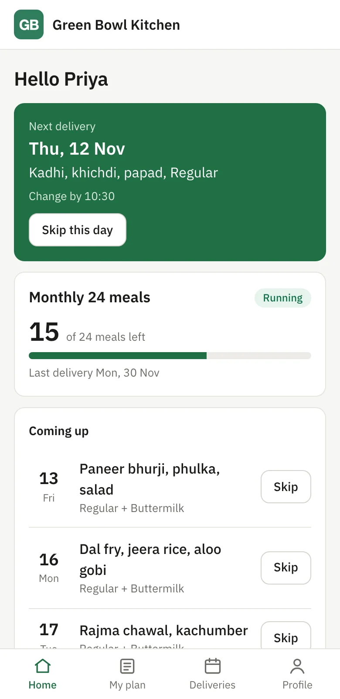
Nächstes Essen, verbleibende Essen und Aussetzen
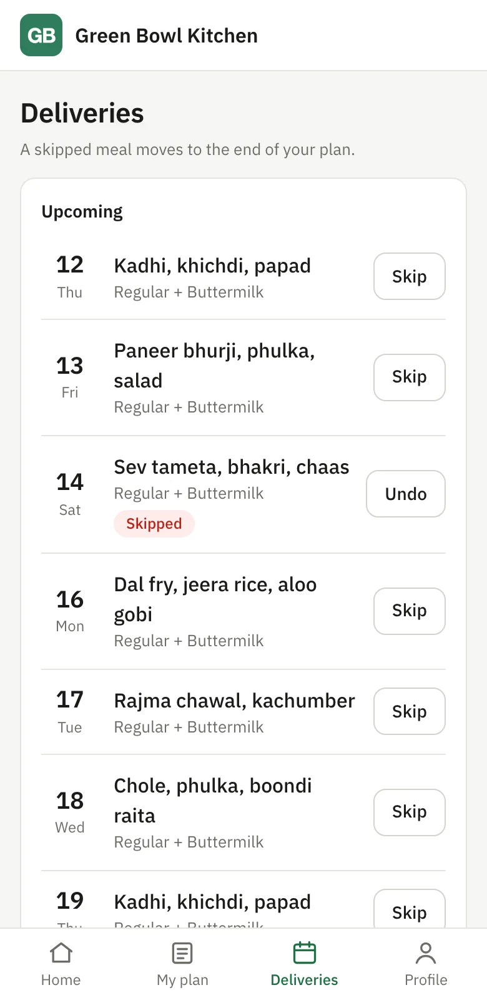
Jedes kommende Gericht, aussetzen oder rückgängig
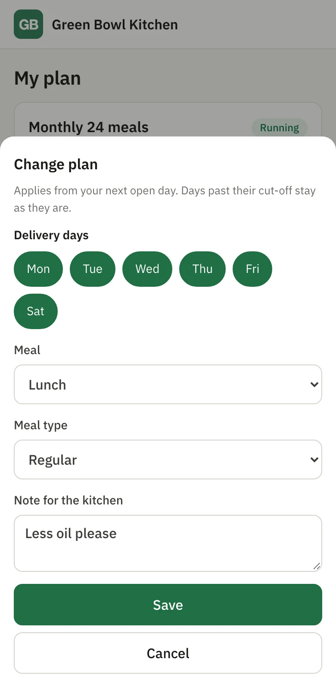
Tage, Essenszeit, Art und Notizen ändern
Diese Nachrichten bekommen Sie nicht mehr
„Bitte morgen kein Essen.“
Tippt an dem Tag auf Aussetzen
„Nächste Woche sind wir weg.“
Pausiert das Abo für diese Tage
„Wie viele Essen habe ich noch?“
Sieht die verbleibenden Essen auf dem ersten Bildschirm
„Was gibt es morgen?“
Sieht das Gericht bei jedem Tag
„Ab Montag bitte ins Büro.“
Ändert die Lieferadresse
„Ab nächster Woche bitte vegetarisch.“
Ändert die Essensart
„Abendessen statt Mittagessen, bitte.“
Ändert die Essenszeit
„Bitte weniger Öl.“
Schreibt eine Notiz, die auf Ihrem Küchenplan erscheint
Sie und Ihr Kunde sehen dasselbe
Es gibt einen Datensatz, nicht zwei. Niemand muss Ihre Liste mit dem Gedächtnis des Kunden vergleichen.
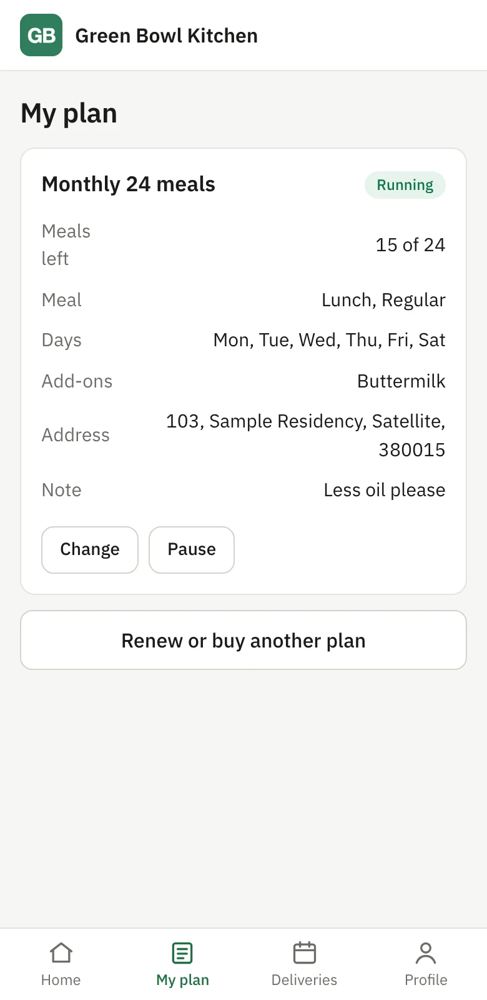
Das sieht Ihr Kunde
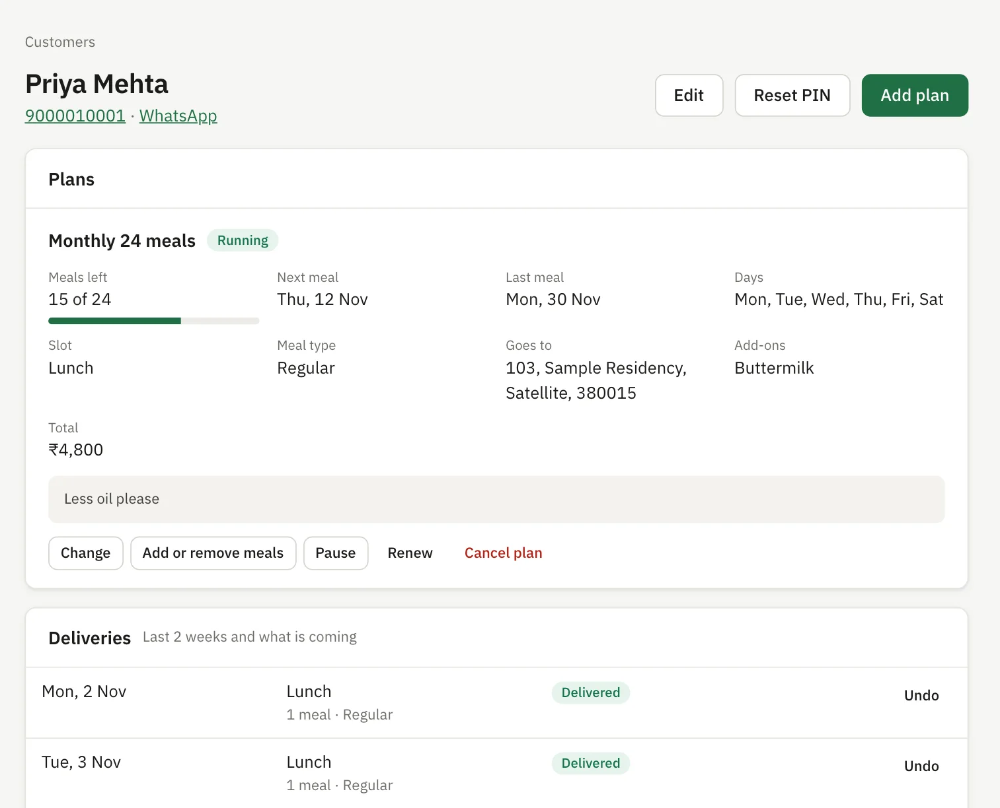
Das sieht Ihr Team beim selben Kunden
Der Kunde ändert etwas
Aussetzen, Pause oder neue Adresse erreichen sofort Ihren Küchenplan und die Lieferliste.
Sie ändern etwas
Essen hinzufügen, Abo verschieben oder Feiertag markieren, und der Kunde sieht es auf seiner Seite.
Jede Lieferung hat einen Status
Beide Seiten sehen, was geliefert wurde, was ausgesetzt wurde und was als Nächstes kommt.
Das System rechnet für Sie
Niemand sitzt mit dem Taschenrechner da. Legen Sie Preise und Regeln einmal fest, alle Zahlen ergeben sich daraus.
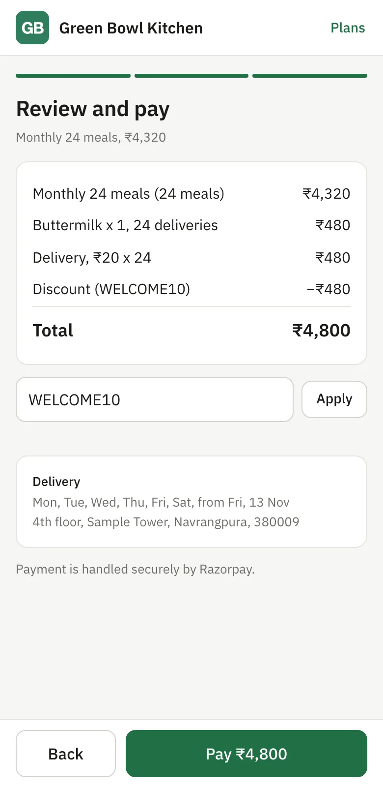
Summe automatisch beim Kauf
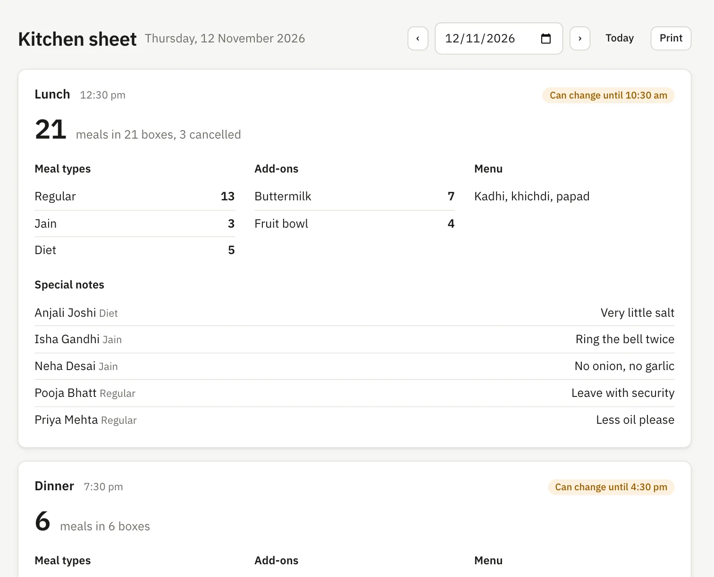
Kochmenge für jede Essenszeit berechnet
Einmal aussetzen, und alles passt sich an
Der Kunde setzt am Samstag aus.
Dieses Essen wird nicht berechnet.
Die letzte Lieferung des Abos rückt auf den nächsten offenen Tag.
Die Kochmenge für Samstag sinkt um eins.
Der Kunde verschwindet von der Lieferliste für Samstag.
Niemand hat eine Tabelle angefasst. Ein Feiertag funktioniert genauso, für alle Kunden gleichzeitig.
Automatisch berechnet
Verbleibende Essen nach jeder Lieferung
Enddatum des Abos nach jeder Pause, jedem Aussetzen oder Feiertag
Abopreis, Extras, Liefergebühr und Rabatt
Liefergebühr nach Entfernung zum Kunden
Tagesmenge nach Essenszeit, Essensart und Extra
Offener Betrag jedes Kunden
Startdatum einer Verlängerung, wenn das aktuelle Abo endet
Zahlungsabgleich ohne Kopfschmerzen
Am Ende des Tages oder Monats wissen Sie, dass die Zahlen stimmen.
Online-Zahlungen werden automatisch dem richtigen Kunden und Abo zugeordnet
Bar- und Überweisungszahlungen werden in Sekunden mit Notiz eingetragen
Summen getrennt nach online, Bank und bar, für beliebige Zeiträume, damit Sie Kasse und Bankkonto abgleichen können
Eine Liste „Still to collect“ zeigt, wer wie viel schuldet
Jede Zahlung zeigt, wer sie erfasst hat, und das Löschen eines falschen Eintrags bleibt im Verlauf sichtbar
Laden Sie den vollständigen Bericht für Ihre Buchhaltung herunter, mit Referenzen der Online-Zahlungen
Tiffora liest Ihren Kontoauszug nicht. Es liefert Ihnen die genauen Zahlen zum Abgleich.
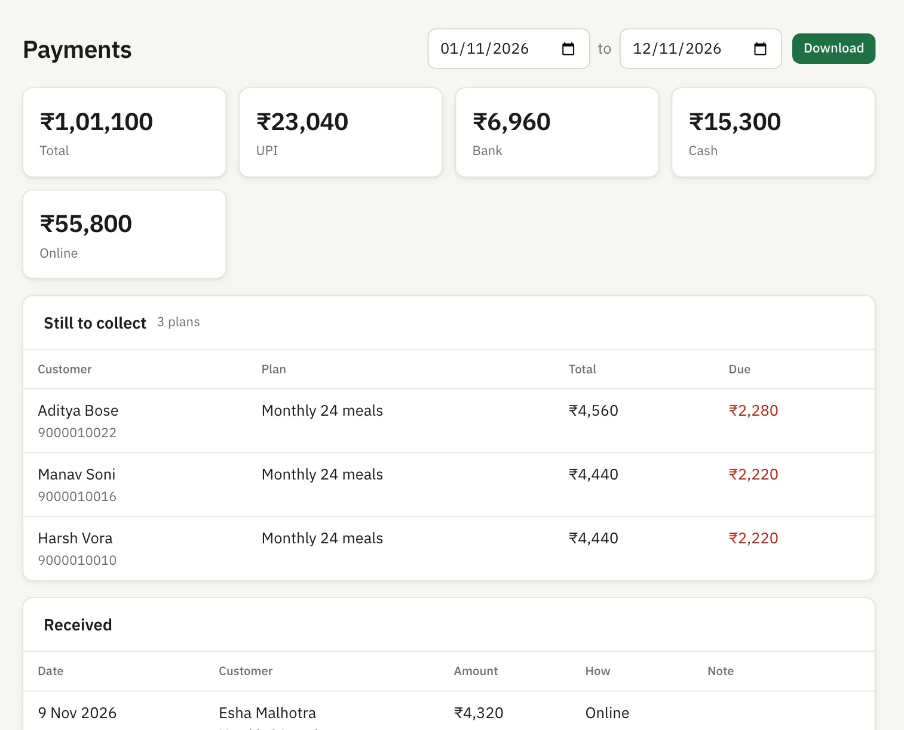
Ein Blick hinein
Das sind Bildschirme des echten Produkts, von einer Küche in Indien. Küche und Kunden sind Beispiele.
Die App ist derzeit auf Englisch. Weitere Sprachen können auf Anfrage ergänzt werden.
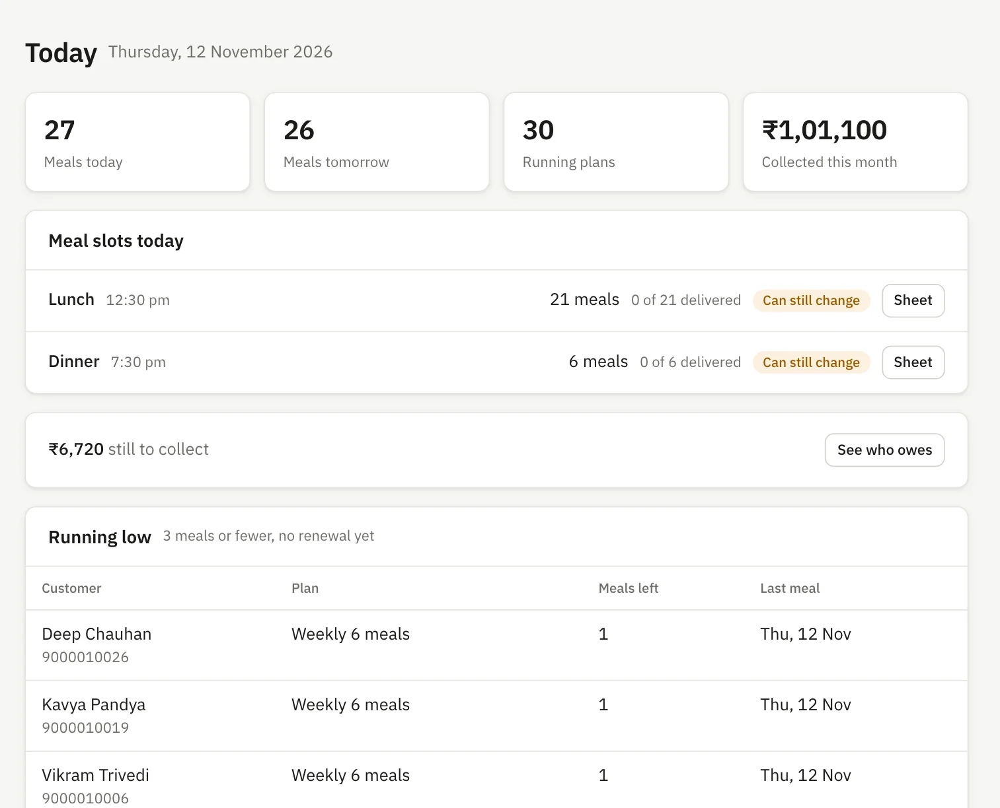
Heute Ihr ganzer Tag auf einem Bildschirm, auch wem die Essen ausgehen
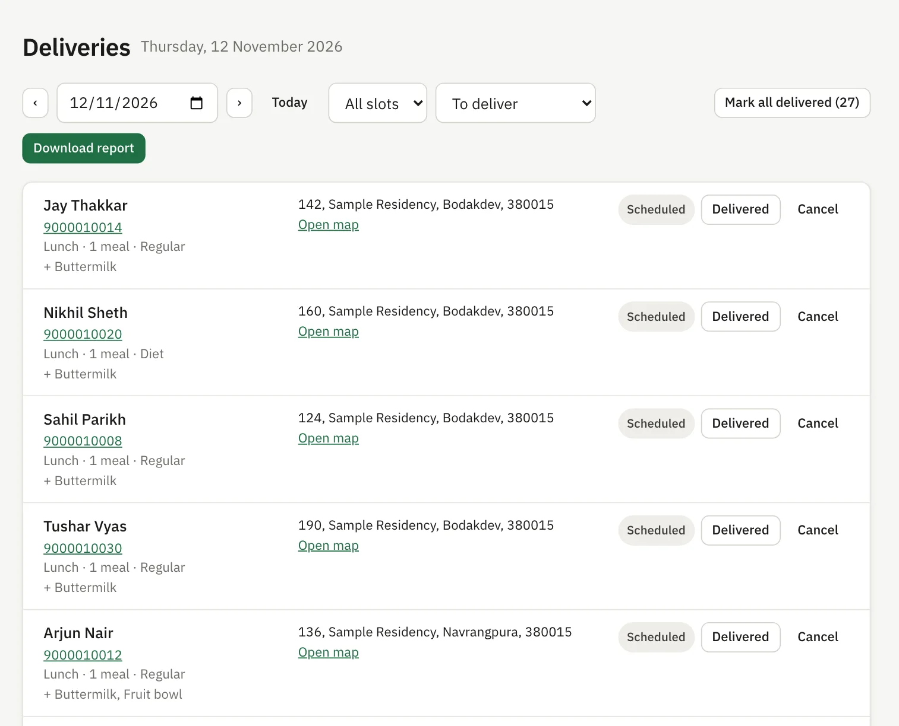
Lieferliste Adresse, Telefon, Essen und Kartenlink, Download mit einem Klick
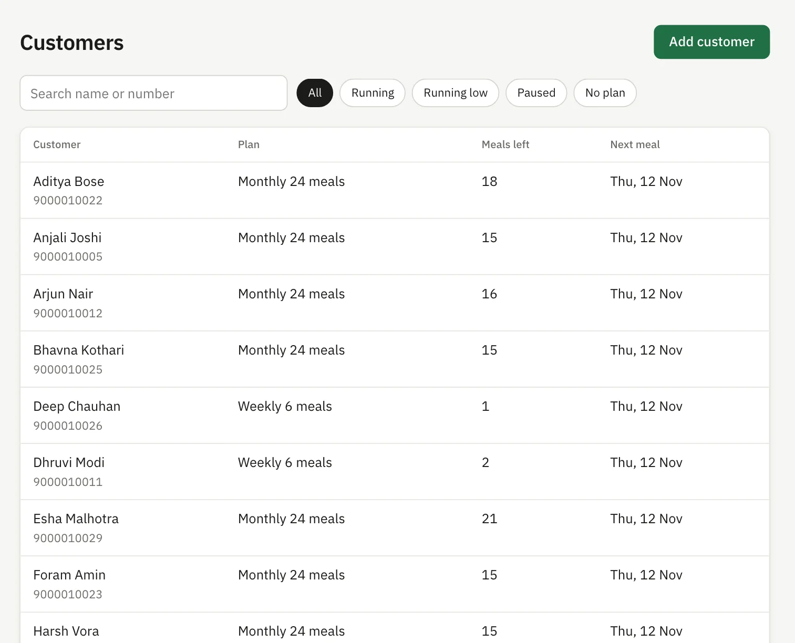
Kunden Jeden finden und nach aktiv, wenige Essen oder pausiert filtern
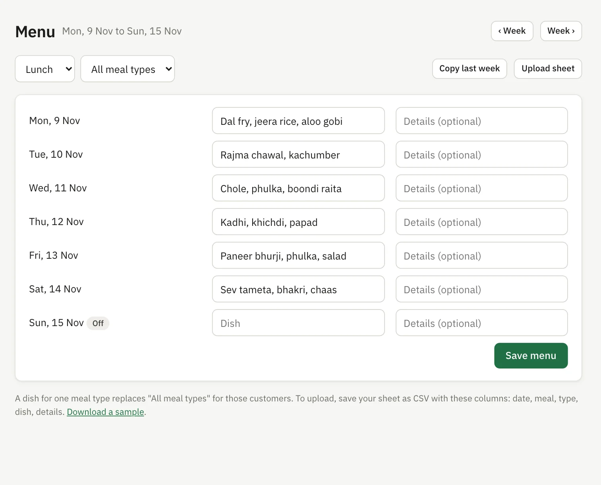
Wochenplan Eintippen, Vorwoche kopieren oder Tabelle hochladen
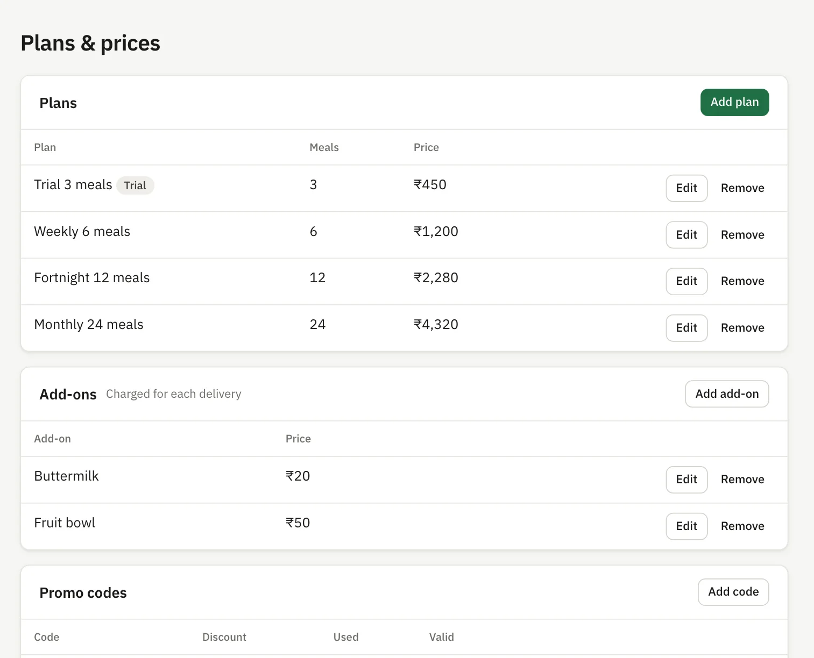
Abos und Preise Abos, Extras und Rabattcodes selbst ändern
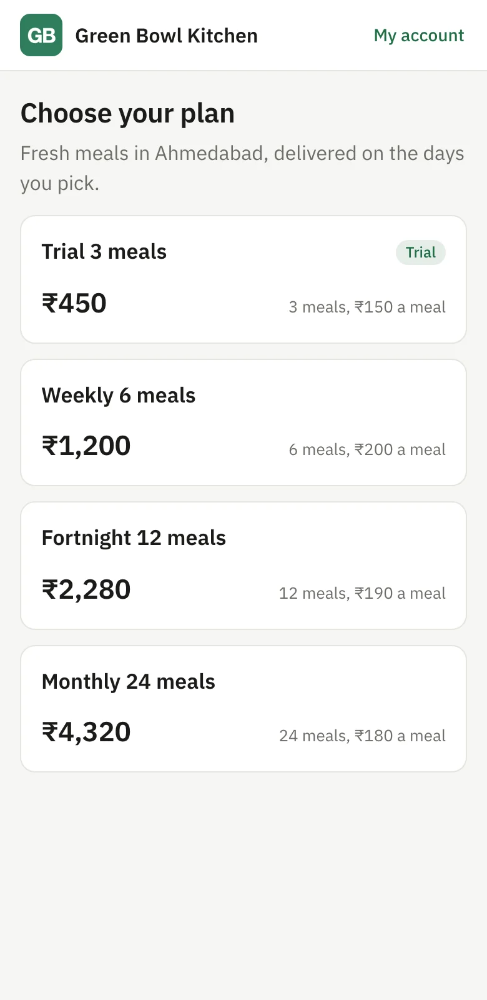
Die Seite für Ihre Kunden Ihr Name, Ihr Logo, Ihre Abos, bereit zum Teilen über einen Link
So funktioniert es
Wir richten Ihre Küche ein
Teilen Sie uns Abos, Preise, Essenszeiten, Logo und Zahlungsdaten mit. Wir tragen alles ein und machen Ihre Seite fertig.
Sie teilen einen Link
Senden Sie Ihren Kunden den Link. Sie wählen ein Abo, zahlen online und verwalten alles selbst.
Sie steuern den Tag von einem Bildschirm
Küchenplan öffnen, kochen, Lieferliste herunterladen und Geliefertes markieren.
Alles, was heute enthalten ist
Läuft auf jedem Handy und Computer. Nichts zu installieren.
Für Ihre Kunden
Abo kaufen und online bezahlen
Mit einem Probeabo starten, wenn Sie eines anbieten
Essensart, Essenszeit und Liefertage wählen
Extras wie Saft oder Obst hinzufügen
Rabattcode einlösen
Zuhause auf einer Karte markieren
Einen Tag aussetzen oder das Abo pausieren
Tage, Zeit, Essensart oder Adresse ändern
Verbleibende Essen und kommende Gerichte sehen
Frühere Zahlungen sehen
Am Handy verlängern
Anmeldung mit Handynummer und PIN
Für Ihr Küchenteam
Die heutige Anzahl auf einen Blick
Die Anzahl für morgen, um den Einkauf zu planen
Küchenplan nach Essenszeit und Art
Anzahl der Extras und Kundennotizen
Lieferliste nach Gebiet sortiert
Lieferbericht zum Herunterladen
Essen als geliefert markieren
Selbstabholung für Kunden
Wochenplan, mit Kopie der Vorwoche
Speiseplan aus einer Tabelle hochladen
Feiertage und wöchentliche Ruhetage
Änderungsfrist für jedes Essen
Für Sie als Inhaber
Ihre eigene Seite mit Ihrem Namen und Logo
Online-Zahlungen auf Ihr eigenes Zahlungskonto
Vollständiger Verlauf jedes Kunden
Kunden hinzufügen, die telefonisch bestellen
Jedes Abo ändern, Essen hinzufügen oder entfernen
Bar- und Überweisungszahlungen erfassen
Offene Zahlungen sehen
Zahlungsbericht zum Herunterladen
Liste der Kunden mit wenigen Essen
Abos, Extras und Rabattcodes festlegen
Liefergebühr nach Entfernung, mit maximaler Reichweite
Getrennte Logins und Rechte für Ihr Team
Funktioniert mit den Tools, die Sie schon nutzen
Starten Sie mit dem, was heute bereit ist. Alles mit dem Hinweis „Auf Anfrage“ wird für Ihre Küche ergänzt, wenn Sie es brauchen.
Zahlungen
RazorpayHeute bereit
Karten, UPI, Online-Banking und Wallets, für Küchen in Indien. Das Geld geht auf Ihr eigenes Konto.
Apps von PhonePe, Google Pay und PaytmHeute bereit
Kunden in Indien können schon heute mit diesen Apps per UPI bezahlen.
PhonePe als ZahlungsanbieterAuf Anfrage
Nutzen Sie PhonePe als Ihren Hauptanbieter für Zahlungen.
Paytm, Cashfree, PayU und CCAvenueAuf Anfrage
Weitere beliebte Zahlungsanbieter in Indien.
Stripe und PayPalAuf Anfrage
Für Küchen außerhalb Indiens.
WhatsApp
WhatsApp-Chat mit einem TippHeute bereit
Ihr Team öffnet mit einem Tipp einen Chat mit jedem Kunden. Kunden können Ihrer Küche von ihrer Seite aus schreiben.
Automatische WhatsApp-NachrichtenAuf Anfrage
Erinnerungen an Verlängerung, Zahlung und Lieferung über die WhatsApp Business API.
Karten
Kartenmarkierung beim KaufHeute bereit
Kunden markieren ihr Zuhause auf der Karte, und die Liefergebühr wird aus der Entfernung berechnet.
In Google Maps öffnenHeute bereit
Jede Lieferung hat einen Link, der den genauen Ort in Google Maps öffnet.
Adresssuche mit Google MapsAuf Anfrage
Kunden tippen ihre Adresse und wählen sie aus den Vorschlägen von Google.
Straßenentfernung von GoogleAuf Anfrage
Liefergebühren nach der tatsächlichen Straßenentfernung.
Gemacht für Küchen, die Essensabos verkaufen
Es entstand aus den täglichen Problemen einer echten Essensabo-Küche, nicht aus den Vermutungen einer Softwarefirma.
Mittagstisch-LieferdiensteGhost KitchensDiät- und Gesund-Essen-AbosSalat-AbosHeimküchenFirmenessen
Als Nächstes
Das ist noch nicht fertig. Wir bauen es als Nächstes, je nachdem, was Küchen am meisten brauchen.
App für FahrerTagesroute und Lieferstatus am Handy.
WhatsApp-NachrichtenAutomatische Erinnerungen an Verlängerung und Zahlung.
Mehr BerichteUmsatz, Verlängerungen und wie lange Kunden bleiben.
Ein einfacher Preis
€139 pro Monat
Pro Küche. Wir bekommen keinen Anteil an Ihrem Umsatz.
Die Seite für Ihre Kunden, mit Ihrem Namen und Logo
Ihre Küchenverwaltung, mit Logins für Ihr Team
Wir richten Ihre Abos, Preise und Essenszeiten ein
Das Geld der Kunden geht direkt auf Ihr eigenes Zahlungskonto
Jede Funktion auf dieser Seite
Häufige Fragen
Müssen meine Kunden eine App herunterladen?
Nein. Sie teilen einen Link. Er öffnet sich im Browser des Handys, und Kunden melden sich mit Handynummer und 4-stelliger PIN an.
Kann ich meine bestehenden Kunden übernehmen?
Ja. Ihr Team kann jeden Kunden mit Abo und verbleibenden Essen anlegen, damit niemand bei null anfängt.
Wohin geht das Geld der Kunden?
Direkt auf Ihr eigenes Zahlungskonto. In Indien nutzen wir Razorpay. Außerhalb Indiens werden Stripe oder PayPal auf Anfrage ergänzt. Tiffora verwahrt Ihr Geld nicht und erhält keinen Anteil an Ihrem Umsatz.
Viele meiner Kunden zahlen bar. Funktioniert das trotzdem?
Ja. Ihr Team kann Bar- oder Überweisungszahlungen beim Kunden erfassen, und der offene Betrag aktualisiert sich von selbst.
Gleicht es automatisch mit meinem Kontoauszug ab?
Nein. Tiffora erfasst jede Zahlung und liefert Ihnen Summen für online, Bank und bar für beliebige Zeiträume. Diese vergleichen Sie mit Kasse und Bankkonto.
Was ist, wenn ein Kunde nach der Frist aussetzen möchte?
Das geht nicht, weil Sie dann schon kochen. Sie legen die Frist für jedes Essen fest. Danach ist dieses Essen gesperrt und Ihre Anzahl bleibt richtig.
Gibt es eine Fahrer-App oder WhatsApp-Nachrichten?
Noch nicht. Heute erhalten Sie eine Lieferliste, die Sie herunterladen und mit Ihren Fahrern teilen können. Eine Liefer-App und WhatsApp-Erinnerungen bauen wir als Nächstes.
Führen Sie Ihre Küche, nicht Ihre Tabellen
Wir richten gerade unsere ersten Küchen ein. Erzählen Sie uns, wie Sie Ihre führen, und wir zeigen Ihnen, wie es funktionieren würde.